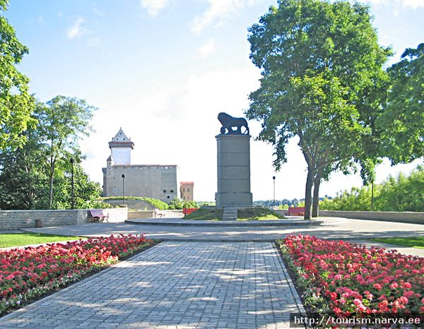

Narva
Narva on eriline ja kordumatu linn, kus mitmete sajandite vältel on piirnenud ja põimunud erinevad rahvad ja riigid - ka tänapäeval on siin käsikäes vana ja uus ning erinevad kultuurid. Geograafiline ja ajalooline Ida ja Lääne ristumine on kujundanud Narva eripära ja kordumatuse. Piir pole ju ainult eraldusriba, vaid ka riikide, rahvaste ja nende kultuuride kohtumispaik.
Narva õitsengu aeg oli XVII sajandil, Rootsi perioodil, kui loodi ainulaadne Narva keskuse arhitektuuriline ansambel. Majade kivikatused, portaalid, nikerdatud kivikaunistused ja tuulelipud andsid vanalinnale piduliku ning linnaliku ilme. Kahjuks, eelmise sajandi II Maailmasõja käigus, hävis endisaegne Narva peaaegu täielikult. Tänapäeva Narva on suuruselt kolmas Eesti linn, oluline kultuuri – ja turismikeskus Eesti idapiiril.
ROOTSI LÕVI MÄLESTUSMÄRK Mälestusmärgi avamine toimus 2000. aastal. See on pühendatud Karl XII võidule Vene vägede üle Põhjasõja Narva lahingus 1700. aastal. See mälestusmärk on Rootsi Kuningriigi kingitus Narva linnale. 
NB! Lisainfo Narva ajaloo kohta Narva Muuseumi koduleheküljel
Vaadake Kreenholmi Narva linna lehelt, sakk Turistile. Muuseum korraldab sinna ekskursioone.